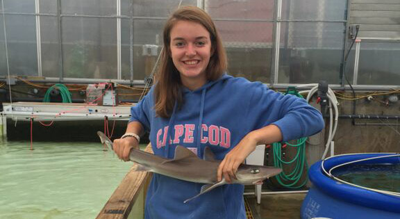
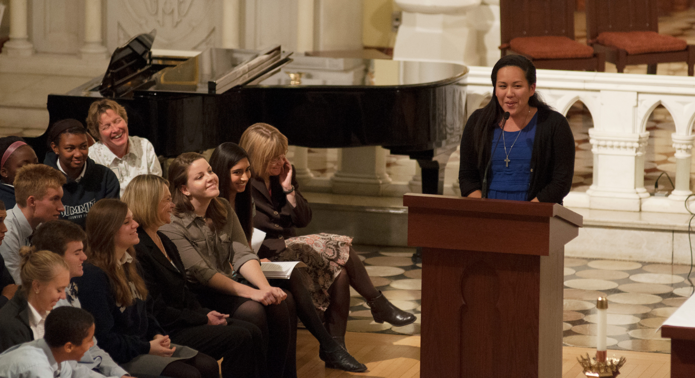

Upper School
Preparing for a Lifetime of Success
The Summit's Upper School program enables students in grades nine through twelve to expand on lessons learned at the Middle School, and prepares them for the academic, spiritual, and life challenges they will face at college and beyond. A rigorous academic curriculum and our world-class Character Education program, combined with an excellent offering in sports, arts, music, and drama, helps every high school student reach his or her full potential, and transform the values of a Summit education into a lifetime of success.
Your Child’s Potential is Our Passion

Powerhouse Science Department
The Summit’s powerhouse science department has put a number of recent graduates on a fast track to careers as engineers, scientists and doctors. Summit Science faculty offer real-world career experience, advanced education and special educational experiences in materials-rich laboratory environments.
Science Research Institute

The Science Research Institute is college preparatory program unique to The Summit is designed for students who plan to seek degrees and careers in the sciences. The program aims to increase scientific literacy through three sequentially tiered classes and an authentic laboratory research experience.
Chapel Talks

A rite of passage for many Summit students, Chapel Talks is the culmination of a rigorous oratory program called SOLEIL. The program is an attempt to deliberately sequence oratory practice starting in the freshmen year. Each student works closely with a faculty member who helps them hone their message.